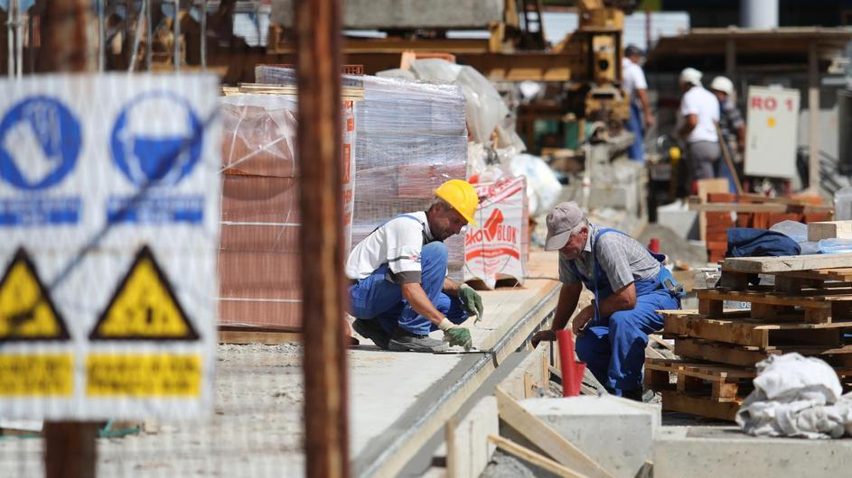
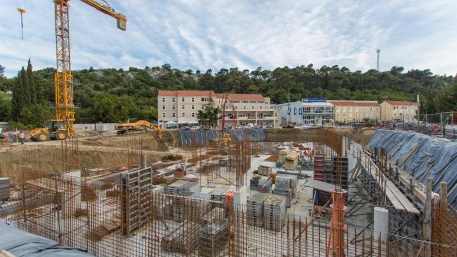

Vijesti
Do kraja 2020. godine 20.000 mladih imat će svoje domove
Do sada je 13 tisuća mladih ljudi došlo do svojega doma zahvaljujući subvencioniranim kreditima i POS-u. Do kraja sljedeće godine plan je da više od 20 tisuća mladih ima svoj dom uz pomoć ovih mjera. More ...

Dionice građevinskih tvrtki vraćaju se u velikom stilu
Prema izračunu portala iCapital, od 25 sastavnica CROBEX-a, najviši rast tijekom ove godine ostvarila je dionica Ingre (+32 posto), zatim opatijskog hotelijera Liburnia Riviera hotela (+30 posto) te Dalekovoda (+24 posto).More ...

Nedostatak radne snage glavna prepreka gospodarskom rastu
Hrvatska i Jadranska regija bilježe pozitivne gospodarske pokazatelje, ali glavna prepreka gospodarskog rasta je nedostatak radne snage, istaknuto je na panelu "Načini financiranja rasta hrvatskih poduzeća"More ...
Povećanjem kvota za strane radnike Vlada prekršila zakon
Povećanjem kvote za strane radnike, bez konzultiranja socijalnih partnera i nekoliko drugih institucija, prekršen je Zakon o strancima, ističe SSSH u otvorenom pismuMore ...

Nakon 6 dugih godina krize: I građevinarstvo zabilježilo rast
Od svih gospodarskih grana kriza je najteže pogodila građevinarstvo i ovo je sada prvi put da su građevinski radovi porasli nakon dugih šest godina uzastopnog padaMore ...